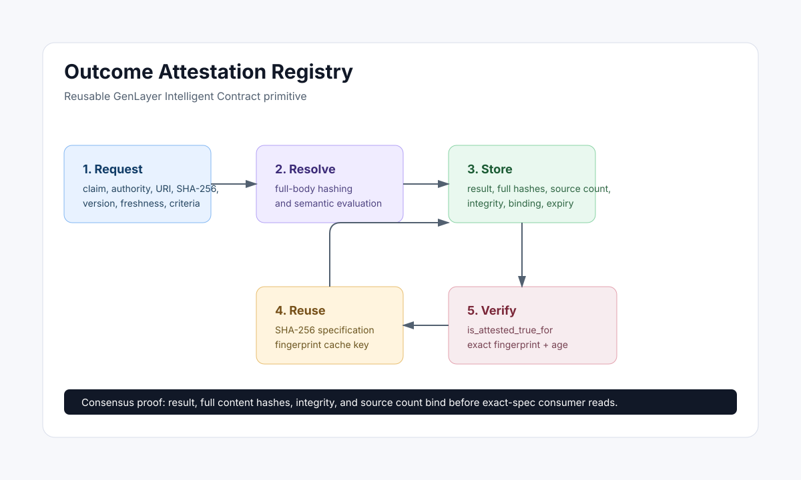

Why It Matters
Many GenLayer applications need to evaluate web data, API responses, documents, or natural-language criteria. A normal smart contract cannot do that directly, and a centralized backend becomes a trusted adjudicator.
This registry makes the adjudication result reusable. Escrows, bounties, prediction markets, DAO tools, reputation systems, agent marketplaces, and policy gates can all consume the same attestation interface.
Each request binds the claim to authoritative HTTPS sources, full SHA-256 commitments, freshness, and criteria.
Every validator hashes the complete evidence and reapplies immutable criteria before strict agreement.
Downstream builders authorize only against a stored expected specification fingerprint.
Architecture
One auditable resolver evaluates every evidence source. The registry writes only after strict agreement on every consequential field.

API
| Method | Purpose |
|---|---|
request_attestation |
Create a request or return an existing fresh request or attestation for the same fingerprint. |
resolve_attestation |
Generic AI/web resolver for semantic claims. |
get_attestation |
Read the full stored attestation by request id. |
get_latest_by_fingerprint |
Find the latest resolved attestation for an exact SHA-256 specification fingerprint. |
is_attested_true_for |
Verify a true result for the consumer's exact expected fingerprint and age. |
is_attested_false_for |
Verify a false result for the consumer's exact expected fingerprint and age. |
is_fresh_for |
Check binding, content verification, expiry, and consumer maximum age. |
Bradbury Proof
The corrected instance is deployed; complete the independent-consensus regressions before resubmission.
result: true | false | inconclusive
primary_content_sha256: exact full-body hash
content_verified: true
consensus_bound: trueIntegration Pattern
Consumer contracts must store the expected specification fingerprint when configuring the protected action. The caller must not choose both the request ID and expected fingerprint.
registry = OutcomeAttestationRegistry(registry_address)
if not registry.view().is_attested_true_for(
request_id,
stored_expected_fingerprint,
u256(1800),
):
raise gl.vm.UserError("attestation not bound, fresh, and true")Repository Files
contracts/outcome_attestation_registry.py |
Primary Intelligent Contract source. |
studio_bradbury/outcome_attestation_registry.py |
Paste-ready Studio deployment copy. |
docs/ |
Guide, architecture, testing, and submission documentation. |
site/ |
Static documentation site suitable for GitHub Pages. |
examples/ |
Consumer contract and GenLayerJS usage sketches. |